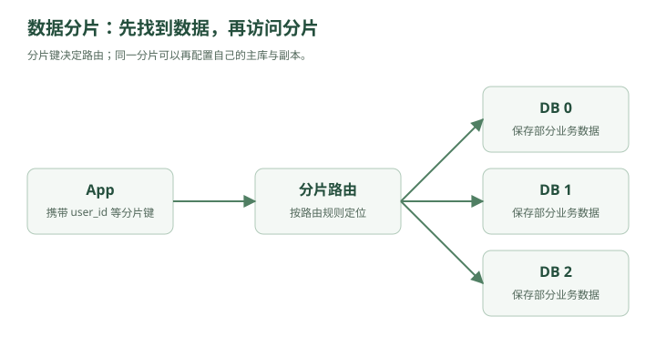

林默原本以为，给 MySQL 加了主从之后，数据库的问题已经解决得差不多了。
现在系统是：
┌→ App 1
用户 → Load Balancer ──────┼→ App 2
└→ App 3
│
┌─────┴─────┐
│ │
Redis DB Router
│
┌────────┴────────┐
▼ ▼
Primary Replicas
读请求可以分散。
主库挂了也可以做 Failover。
看起来很不错。
直到有一天，DBA 发来一条消息：
“订单表 20 亿行了。”
林默第一反应：
“20 亿行怎么了？MySQL 又不是不能存。”
DBA 沉默了几秒。
然后把监控发给他。
orders 表：
数据量：2.1 TB
索引：780 GB
单次备份：9 小时
部分 SQL：3~8 秒
新增索引：不敢动
DDL：不敢动
磁盘：快满了
林默：
“……”
老周看了一眼。
“欢迎来到数据库的下一个阶段。”
一、20 亿行真正可怕的地方是什么？
很多人第一次听到：
20 亿行
会觉得：
“是不是因为 SELECT 会扫描 20 亿条？”
其实如果索引设计得好：
SELECT *
FROM orders
WHERE id = 123456;
MySQL 并不会真的扫 20 亿行。
B+ Tree 仍然可以快速定位。
所以“大表问题”不是简单一句：
数据多，所以查询慢。
真正的问题是整个系统开始变得笨重。
比如索引。
假设：
orders
上有：
PRIMARY KEY(id)
INDEX(user_id)
INDEX(create_time)
INDEX(status)
数据越来越多之后，每个索引也越来越大。
可能已经大到：
无法全部放进内存
于是查询开始频繁访问磁盘。
缓存命中率下降。
然后：
随机 IO 增加
↓
查询延迟上升
再比如备份。
以前：
100 GB
备份一下没什么。
后来：
2 TB
全量备份变得非常慢。
恢复更可怕。
你可以备份 9 小时。
但真出事故时，业务能等你恢复 9 小时吗？
再比如 DDL。
产品经理说：
“订单表加一个字段。”
以前：
ALTER TABLE orders ADD COLUMN source INT;
林默啪一下就执行了。
现在看到：
20 亿行
他手都不敢点 Enter。
二、老周提出了一个问题
老周问：
“这些 20 亿订单，需要放在同一台机器吗？”
林默：
“什么意思？”
老周画了一张图：
原来：
orders
20亿条
然后把它从中间切开：
orders_0
10亿条
orders_1
10亿条
林默眼睛一亮。
“分表？”
“对。”
三、分表：把一张大表切成很多小表
比如原来：
orders
20 亿行
拆成：
orders_0
orders_1
orders_2
orders_3
每张：
5 亿行
这就是：
水平分表
Horizontal Partitioning。
为什么叫“水平”？
想象一张表：
id | user_id | amount | status
--------------------------------
1
2
3
4
5
6
横着切：
表A：
1
2
3
表B：
4
5
6
字段没变。
只是：
把不同的行分开。
所以叫水平拆分。
四、垂直拆分又是什么？
老周又画：
user 表：
id
name
phone
email
avatar
address
bio
preferences
last_login
...
林默说：
“字段好多。”
“对。”
如果一张表字段特别多，而且不同字段访问频率不同，也可以拆。
例如：
user_basic
id
name
phone
email
以及：
user_profile
user_id
avatar
address
bio
preferences
这叫：
垂直分表
Vertical Partitioning。
也就是：
按列拆。
记忆非常简单：
水平拆分
→ 拆行
垂直拆分
→ 拆列
五、分表之后，问题只是缓解了一部分
林默把订单拆成：
orders_0
orders_1
orders_2
orders_3
但四张表还在：
同一个 MySQL 实例
也就是说：
同一块 CPU
同一块内存
同一套磁盘 IO
单机写入能力还是有限。
于是老周问：
“既然表都可以拆，数据库为什么不能拆？”
六、分库出现了
原来：
MySQL A
orders_0
orders_1
orders_2
orders_3
现在：
DB 0
└── orders_0
DB 1
└── orders_1
DB 2
└── orders_2
DB 3
└── orders_3
请求真正被分散到不同机器。
这叫：
分库
Sharding。
现在：
写请求 20000 QPS
理论上可以变成：
DB0：5000
DB1：5000
DB2：5000
DB3：5000
这一次，扩展的不只是：
读能力
连：
写能力
存储容量
都可以水平扩展。
林默终于明白：
主从主要是在复制数据。
而：
分库是在拆数据。
这是两件完全不同的事情。
七、最关键的问题来了：一条订单到底放哪？

林默准备了四个库：
DB0
DB1
DB2
DB3
然后突然发现：
用户下了一个订单：
orderId = 938127
放哪个库？
不能随机。
否则以后查询时，你根本不知道它在哪。
老周说：
“所以你需要一个分片规则。”
Sharding Key
分片键。
八、最简单的规则：取模
假设根据：
user_id
分库。
四个库：
DB0
DB1
DB2
DB3
公式：
user_id % 4
例如：
1000 % 4 = 0
→ DB0
1001 % 4 = 1
→ DB1
1002 % 4 = 2
→ DB2
1003 % 4 = 3
→ DB3
非常简单。
而且查询用户订单时也很方便。
例如：
user_id = 1001
直接计算：
1001 % 4 = 1
于是直接：
查 DB1
不用：
DB0、DB1、DB2、DB3 全部查一遍
九、为什么经常用 user_id 做分片键？
订单系统中，经常有一个核心查询：
查询某用户的所有订单
如果按：
user_id
分片，那么同一个用户的数据天然落到同一个库。
例如：
user 1001 的所有订单
↓
DB1
查询很方便。
但如果你按：
order_id
分片。
那 user 1001 的订单可能是：
订单 A → DB0
订单 B → DB3
订单 C → DB1
订单 D → DB2
那么：
查询 user 1001 所有订单
就必须：
DB0
DB1
DB2
DB3
全查。
所以分片键选择本质上取决于：
你的主要访问模式是什么。
这句话非常重要。
系统设计不是：
“user_id 一定比 order_id 好。”
而是：
根据最重要的查询方式决定数据怎么放。
十、但取模方案埋着一颗炸弹
四个库用了两年。
后来业务继续增长。
DBA：
“4 个库不够了，加到 8 个吧。”
林默：
“简单。”
原来：
user_id % 4
改成：
user_id % 8
然后老周问：
“那原来的数据呢？”
林默愣住了。
例如：
user_id = 1006
以前：
1006 % 4 = 2
所以在：
DB2
扩容之后：
1006 % 8 = 6
现在应该在：
DB6
位置变了。
再比如：
1007 % 4 = 3
1007 % 8 = 7
也变了。
实际上，大量数据都会重新定位。
于是你必须：
数据迁移
DB2 的部分数据 → DB6
DB3 的部分数据 → DB7
...
而且迁移期间业务还在不断写新订单。
事情一下子复杂起来。
十一、扩容为什么是分库分表最痛苦的阶段之一？
假设有：
10 TB 数据
现在你要重分片。
你不能简单：
停机 8 小时
搬完
开机
用户不能下单 8 小时，老板可能先把林默搬出去。
所以通常需要做到：
在线扩容
这意味着迁移过程中：
旧库还在提供服务
新库也开始接数据
于是出现各种麻烦：
历史数据在哪？
新数据写哪里？
迁移中的数据读哪个库？
如何防止漏数据？
如何校验一致性？
什么时候切流量？
老周说：
“真正难的从来不是 userId % N 这一行代码。”
“而是 N 发生变化以后怎么办。”
十二、一致性哈希登场
林默问：
“有没有一种算法，加机器的时候别让大部分数据都搬家？”
老周：
“有。”
然后画了一个圆。
0
┌─────────┐
15 │ │ 3
│ │
12 │ │ 6
└─────────┘
9
林默：
“钟？”
“可以这么理解。”
这叫：
Hash Ring
哈希环。
十三、把机器放到环上
假设：
DB A
DB B
DB C
分别经过 Hash：
hash(A)
hash(B)
hash(C)
落到环上：
A
┌───────┐
C │ │
│ │
└───────┘
B
然后数据也 Hash。
比如：
user1001
经过：
hash(user1001)
也落到环上的某个位置。
然后规定：
顺时针找到的第一台机器，就是它所属的机器。
例如：
user1001
↓
●
\
\ 顺时针
↓
DB B
那么 user1001 就存 DB B。
十四、增加一台机器时发生什么？
原本：
A
B
C
现在增加：
D
D 插到环上的某个位置。
那么只有：
D 前面那一小段区间
的数据需要移动到 D。
而不是所有数据重新计算位置。
这就是一致性哈希最核心的价值：
节点数量变化时，尽量减少数据迁移。
十五、但是一致性哈希也不是万能药
林默马上问：
“那以后分库分表都用一致性哈希不就行了？”
老周摇头。
数据库分片中，工程上并不意味着所有场景都会直接采用一致性哈希。
因为数据库还有很多需求：
范围查询
事务
数据迁移
容量规划
热点隔离
运维管理
一致性哈希最经典的应用场景，反而经常出现在：
缓存节点
分布式存储
负载分配
比如有：
Redis A
Redis B
Redis C
根据 Key 决定去哪个 Redis。
这时节点动态增加或减少，一致性哈希就非常适合。
所以面试时不要说：
“分库分表扩容一定用一致性哈希。”
更准确应该是：
一致性哈希是一种减少节点变化时数据重新映射的方案，但具体数据库分片还需要结合业务、路由规则和迁移方案设计。
十六、虚拟节点
一致性哈希还有一个问题。
假设三台机器非常倒霉：
A
B
C
Hash 后位置很不均匀。
比如：
A
|
|
|
B-C
那可能导致：
A 负责 70%
B 负责 20%
C 负责 10%
压力严重不均。
怎么办？
引入：
Virtual Node
虚拟节点。
不是让：
A
只在环上出现一次。
而是：
A1
A2
A3
A4
...
同样：
B1 B2 B3...
C1 C2 C3...
这些虚拟节点最终都映射到真实机器。
这样分布会更加均匀。
十七、另一个问题出现了：ID 冲突
分库之前，订单 ID：
AUTO_INCREMENT
非常舒服。
比如：
1
2
3
4
5
但现在：
DB0
DB1
DB2
DB3
都有自己的自增 ID。
于是：
DB0：
1
2
3
DB1：
1
2
3
合起来：
order_id = 1
出现两次。
不行。
于是系统需要：
全局唯一 ID
Global ID。
十八、最简单的方案：UUID
每个服务自己生成：
550e8400-e29b-41d4-a716-446655440000
几乎不会冲突。
优点：
简单
不依赖中心服务
全球唯一
缺点也明显：
长
占空间
无序
这里主要讨论随机 UUID（例如 v4）；有序 UUID 的索引局部性有所不同。如果把随机 UUID 当 MySQL 主键，B+ Tree 插入位置很随机。
可能导致：
页分裂
缓存局部性变差
索引更大
所以高并发数据库主键一般不太喜欢完全随机的 UUID。
十九、Snowflake 出现了
老周写了一个 64 位整数：
186430291234567891
林默：
“这也是 ID？”
“对。”
这类方案最典型的就是：
Snowflake
雪花算法。
一个 ID 可以粗略拆成：
| timestamp | machine_id | sequence |
比如：
时间戳
+
机器编号
+
当前毫秒内序列号
因此：
第一，唯一
不同机器：
machine_id 不一样
同一机器同一毫秒：
sequence 不一样
第二，趋势递增
因为高位通常是时间戳。
所以后生成的 ID 通常更大。
这对 B+ Tree 比随机 UUID 友好得多。
第三，不需要数据库自增
每台应用服务器都能自己生成。
性能很高。
二十、雪花算法又有坑
林默已经学会条件反射了：
“我猜你接下来要说但是。”
老周：
“不错。”
Snowflake 比较典型的问题之一：
时钟回拨
假设服务器时间：
12:00:00
生成了一批 ID。
结果 NTP 校时：
时间突然回到了 11:59:58
如果算法处理不好，就可能产生重复 ID。
所以真实系统要考虑：
时钟回拨检测
等待
备用机器号
逻辑时间
等方案。
再次说明：
每个优雅算法背后，都有边界条件。
二十一、分库后最麻烦的事开始出现
产品经理突然说：
“我要查询昨天所有订单金额前 100 名。”
以前：
SELECT *
FROM orders
WHERE create_time >= ...
ORDER BY amount DESC
LIMIT 100;
一个库。
搞定。
现在：
DB0
DB1
DB2
DB3
怎么办？
每个库都可能有前 100 名。
所以需要：
DB0 → Top 100
DB1 → Top 100
DB2 → Top 100
DB3 → Top 100
然后应用层：
合并
排序
取最终 Top 100
分库之后，一些原本简单的 SQL suddenly 变复杂了。
二十二、分页也出事了
产品经理：
“查第 10000 页订单。”
以前：
LIMIT 100000, 10
已经比较难受。
分库后更麻烦。
如果四个库分别有数据：
DB0
DB1
DB2
DB3
你要拿全局：
第 100001 ~ 100010 条
往往不能简单让每个库：
LIMIT 100000,10
因为全局顺序需要合并。
于是：
跨库分页
跨库排序
聚合统计
都会变困难。
二十三、JOIN 也开始崩
以前：
SELECT *
FROM orders o
JOIN users u
ON o.user_id = u.id;
现在：
orders 在 DB3
users 可能在 DB1
MySQL 没法像以前那样轻松本地 JOIN。
这就是：
跨库 JOIN
问题。
常见解决思路包括：
应用层 JOIN
数据冗余
搜索引擎
宽表
数据仓库
具体选哪个，要看业务。
二十四、为什么说“分库分表能不做就不做”？
林默终于问出了经典问题：
“既然分库分表这么麻烦，为什么网上一讲大系统就喜欢分库分表？”
老周：
“因为网上只画图。”
林默：
“……”
老周认真说：
分库分表不是高级，而是被逼出来的。
在单库还能撑住时：
单库
通常比：
8库64表
好维护得多。
因为分库分表会引入：
复杂路由
跨库查询
跨库事务
扩容迁移
全局 ID
分页排序
数据一致性
运维复杂度
所以正确顺序通常不是：
项目刚上线
↓
先分 64 个库
而是：
优化 SQL
↓
优化索引
↓
加缓存
↓
读写分离
↓
升级硬件
↓
确认单库真的成为瓶颈
↓
再考虑分库分表
这是非常重要的工程判断。
二十五、一个面试场景
面试官问林默：
“有 10 亿条订单数据，你怎么设计？”
以前林默可能会直接答：
“分库分表，用 userId hash 取模。”
现在他不会这么答了。
他会先问：
用户量多少？
QPS 多少？
读写比例是多少？
主要查询条件是什么？
按用户查订单多，还是按订单号查多？
是否需要全局排序？
历史订单是否需要实时查询？
单库目前瓶颈是什么？
因为：
数据量大，不一定等于必须分库。
如果这 10 亿条数据大部分是：
5年前历史数据
可能直接：
冷热分离
把旧数据归档，比立刻分 64 个库更简单。
二十六、冷热数据分离
订单系统里：
最近 3 个月订单
访问特别频繁。
三年前的订单：
一年可能查一次
那为什么都放在昂贵的在线数据库里？
可以：
热数据
↓
MySQL
冷数据
↓
归档库 / 对象存储 / 数仓
用户如果查询三年前订单：
慢一点也可以接受
这样甚至可能避免过早分库。
系统设计再次回到了那个原则：
根据业务，而不是根据技术名词设计。
二十七、林默重新整理了数据库扩展路线
他在白板上写：
第一阶段：
单 MySQL
压力增加：
↓
索引优化
SQL 优化
读请求太多：
↓
Redis
↓
主从复制
↓
读写分离
单库数据太大：
↓
归档 / 冷热分离
还不够：
↓
分表
单机 CPU、IO、写能力也到极限：
↓
分库
于是形成完整路线：
单库
↓
缓存
↓
主从
↓
读写分离
↓
冷热分离
↓
分库分表
二十八、但就在林默准备下班的时候……
运营突然跑了进来。
“出事了！”
“又怎么了？”
“今晚秒杀活动。”
“预计多少人？”
“200 万。”
“商品多少件？”
“1 万件。”
林默沉默。
也就是说：
200万人
同时抢
1万件商品
哪怕数据库已经分库。
瞬间可能仍然出现：
几十万 QPS
请求像洪水一样同时冲进系统。
数据库可能还没来得及慢慢处理，就已经被连接打爆。
林默问：
“继续加数据库？”
老周摇头。
“你现在的问题，不是总处理能力不够。”
“而是——”
他在白板上画了一条巨大的尖峰：
QPS
/\
/ \
/ \
_____/ \_____
“流量在某一瞬间太高。”
林默看着这座尖峰。
突然想起一个词。
削峰。
老周点点头。
然后在数据库前面画了一个盒子：
用户
↓
App
↓
？？？
↓
MySQL
盒子里面写着：
Message Queue
消息队列。
第四章结束
现在整个系统已经继续进化：
┌→ App 1
用户 → Load Balancer ────┼→ App 2
└→ App 3
│
┌──────┴──────┐
│ │
Redis DB Router
│
┌────────────────┼────────────────┐
▼ ▼ ▼
Shard 0 Shard 1 Shard 2
│ │ │
Replica Replica Replica
这一章真正需要记住的是这条因果链：
单表越来越大
↓
分表
↓
单机资源仍然有限
↓
分库
↓
需要决定数据放哪
↓
Sharding Key
↓
Hash / 取模
↓
扩容导致大量数据重新映射
↓
一致性哈希可以减少节点变化时的数据迁移
↓
分库后自增 ID 冲突
↓
全局 ID / Snowflake
↓
跨库 JOIN、排序、分页、事务变复杂
↓
所以分库分表不是越早越好
你现在已经有一个很关键的系统设计直觉了：
水平扩展解决容量问题，但会把原本单机内部的问题，变成分布式协调问题。
下一章我们就接秒杀事故：
下一章：两百万人同时按下购买键——消息队列、削峰与异步化
会自然串起：
为什么要 MQ → 削峰填谷 → 同步转异步 → Kafka / RabbitMQ 的角色 → 消息丢失 → 重复消费 → 幂等 → 顺序消息 → 消息积压 → 最终一致性。
行，下一章。